ClassLink Login
Website
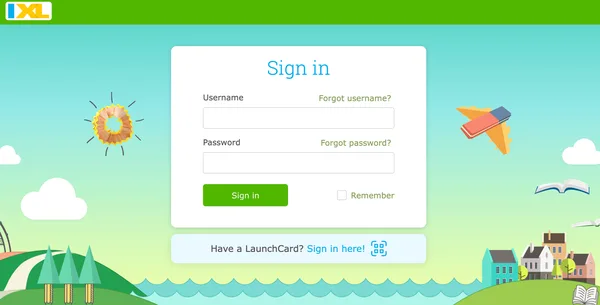
IXL Learning
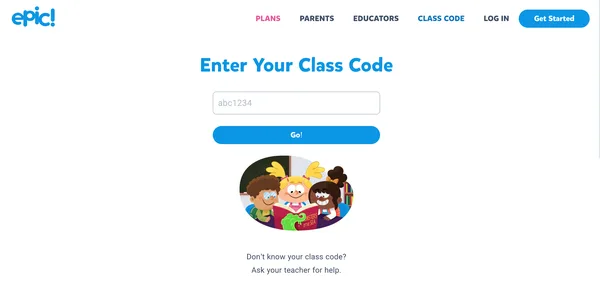
Epic! Books
Class Codegmj6220
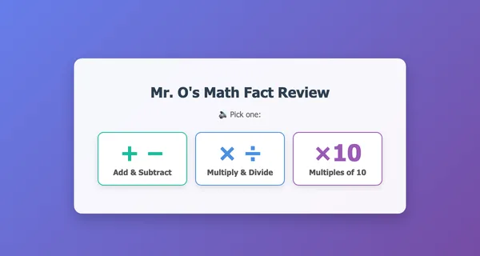
Math Fact Review
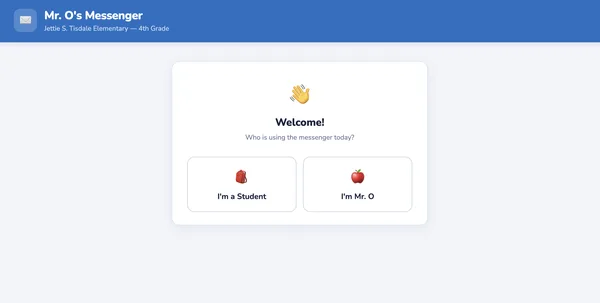
Mr. O's Messenger
Website
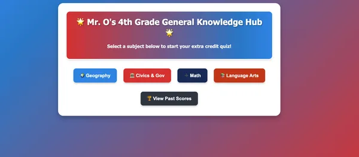
Mr. O's General Knowledge Hub

Wonders Vocabulary Practice
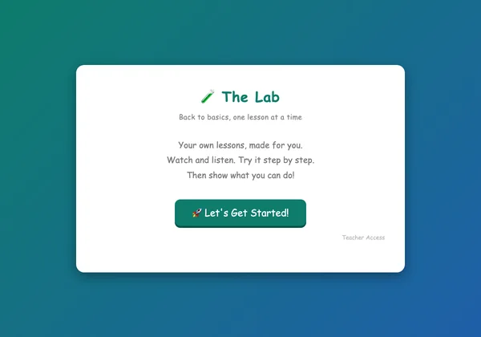
The Lab
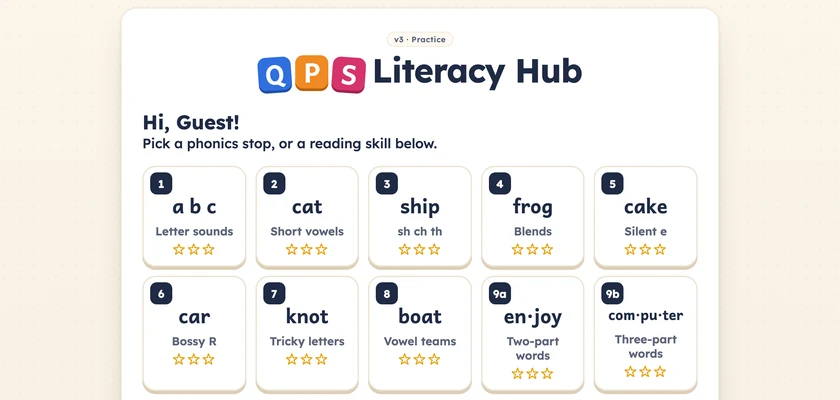
QPS Literacy Hub

Animal Adaptations - Review and Test
Reading

SBAC Practice: Base Ten

Math Module 5 Review and Test
Math

Math Module 4 Review and Test
Math

Math Module 3 Review and Test
Math
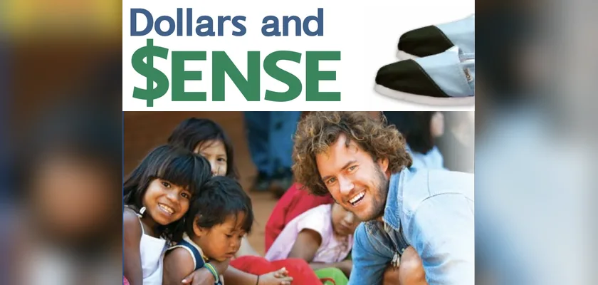
Dollars and Sense - Review and Test
Reading
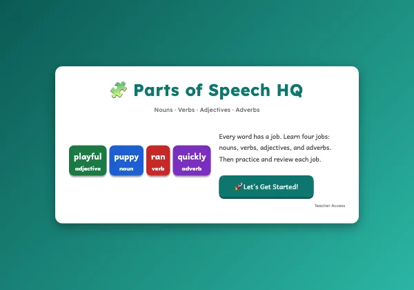
Parts of Speech HQ
Reading
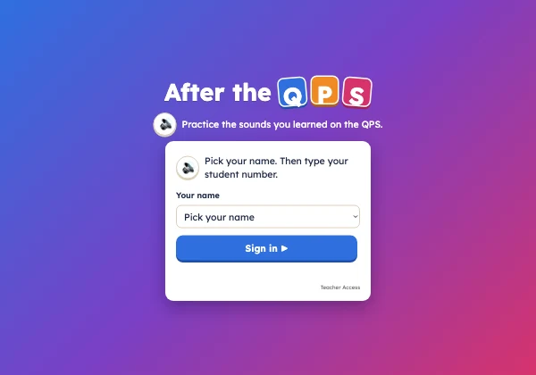
After the QPS
Reading

Inference Practice
Reading
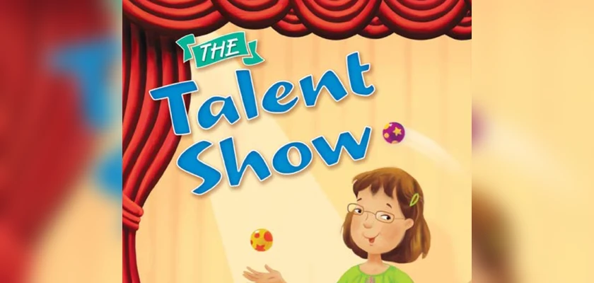
The Talent Show - Review and Test
Reading
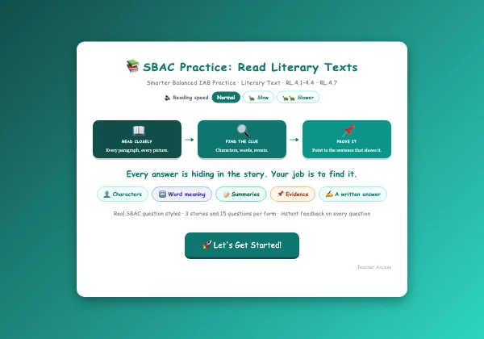
SBAC Practice: Read Literary Texts
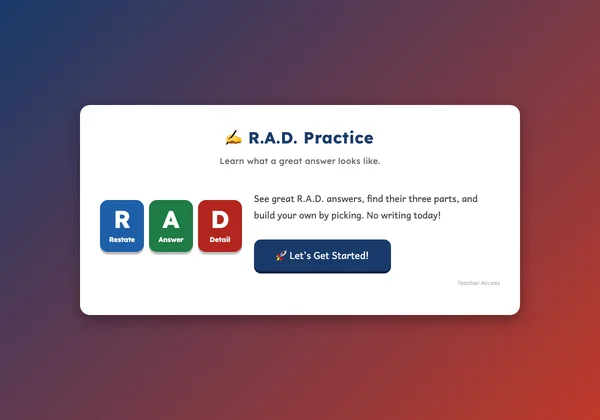
R.A.D. Practice
Reading
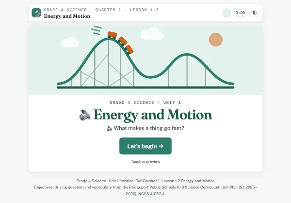
Science: Energy and Motion
Science
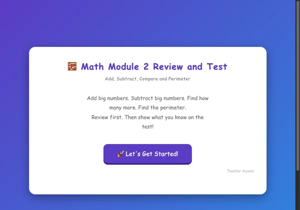
Math Module 2 Review and Test
Math

Science: Starting and Stopping
Science
A World of Change - Review and Test
Reading

Rounding Review and Quiz - Numberline Edition
Math

Rounding Review and Quiz - Mechanics Edition
Math
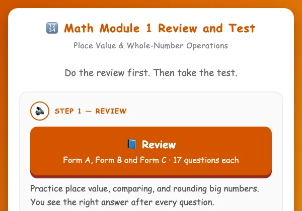
Math Module 1 Review and Test
Math
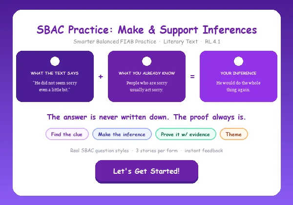
SBAC Practice: Inferences
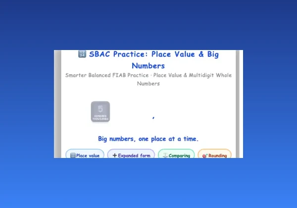
SBAC Practice: Place Value
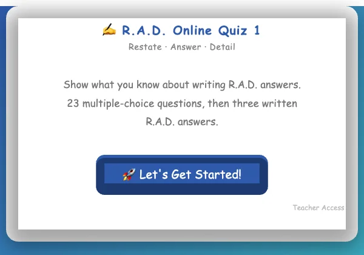
R.A.D. Online Quiz 1
Reading